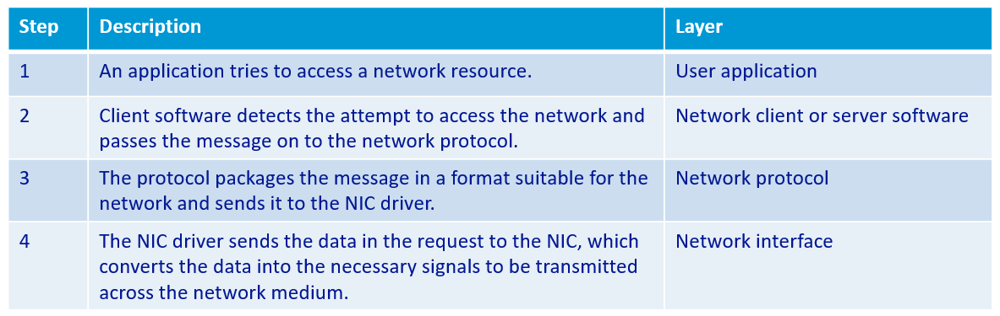
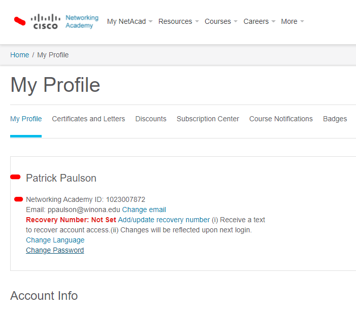
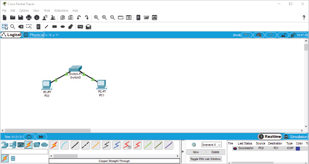
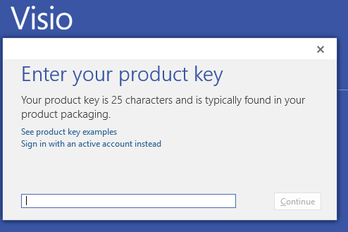

What is network communications? Note: do not only rely on the book for the answer. Consult LinkedIn Learning and Wikipedia.
(50) 1. Briefly state what the practice and study of ICT-Information and Communications Technology is about.
Refer to Table 1-4 'Layers of the Network Communication Process' shown below.

Do Hands-On Project 1-3, and review the Ethernet Properties Network Connection of your laptop. Enter your answers to the step 5 questions in the spaces below. Hint: refer to Table 1-5.
(25) 2. Word-processing program: (25) 3. NIC displayed in the "Connect using" text box: (25) 4. Client for Microsoft Networks: (25) 5. File and Printer Sharing for Microsoft Networks: (25) 6. Internet Protocol Version 4 (TCP/IPv4):
Do Hands-On Project 1-4 to view and test network addresses and connectivity of your laptop. Enter your answers to the questions in the spaces below.
(25) 7. Use the ipconfig /all command to determine the IPv4 address (either wired or wireless): (25) 8. Use the arp -a command to find one pair of Internet Address / Physical Address:
ipconfig /all
arp -a
Do Hands-On Project 1-7 to transfer a document to this course's shared network folder. In step 3 save the document as in your ' ' folder.
In step 5 save the document to the network folder ' \\winona.edu\dfs\Community\ClassStorage\20223000107\Shared\Summative01 Answer the question in the spaces below. (25) 9. Write down the network model used in this activity:
\\winona.edu\dfs\Community\ClassStorage\20223000107\Shared\Summative01
Do Hands-On Project 1-8 and look up computer and network acronyms. Set your browser to: https://www.acronymfinder.com Lookup the listed acronyms and enter the definitions in the spaces below: (25) 10. TCP/IP: (25) 11. Wi-Fi: (25) 12. SSID: (25) 13. WEP: (25) 14. OSI: (25) 15. Ping: (25) 16. UTP: (25) 17. Cat6: (25) 18. EMI: (25) 19. RJ-45:
The Packet Tracer Labs are accessible from MindTap in two ways:
Set your browser to:
https://www.netacad.com/ Follow the instructions in Packet Tracer Lab 1-1. Setup a Cisco Networking Academy account, download and install the Cisco Packet Tracer application. Cisco Packet Tracer will be used throughout this course.
(100) 20. Use the Snipping Tool to make a screen shot of your Cisco Networking Academy profile, similar to the screen shot below.  Save the screen shot as "Ex1" in your ' ' folder. You will be combining screen shots from several exercises at the end of this assignment, just as you did in Formative00-PDF File Creation.
Follow the instructions in Packet Tracer Lab 1-2 to build a small network.
(100) 21. Use the Snipping Tool to make a screen shot of your small network, similar to the screen shot below.  Save the screen shot as "Ex2" in your ' ' folder. You will be combining screen shots from several exercises at the end of this assignment, just as you did in Formative00-PDF File Creation.
Visit the Microsoft Azure DevTools website. Check whether your Office is 32 or 64 bit by opening Excel>Account>About Excel and examining the end of the first line. If you are still running 32 bit Office please update to the 64 bit Office before proceeding. Then download and install the 64 bit version of Microsoft Visio Professional 2019 or later. Do not mix the 32 bit and 64 bit versions, it will cause you a LOT of problems. Note that it is a large, 2 GB, download. It will download as an .iso file, which you must mount using Windows File Explorer. Once mounted, run the setup.exe file. Launch Visio, and enter the Product Key from the Microsoft Imagine website  Then use Visio to draw the same simple network from the Cisco Packet Tracer Lab 1-2. Refer to LinkedIn Learning or the internet for assistance using Visio. Save the file, and then use the Snipping tool to make a screen shot. (100) 22. Save the screen shot of the Visio diagram "Ex3" in your ' ' folder. You will be combining screen shots from several exercises at the end of this assignment, just as you did in Formative00-PDF File Creation.
Use a web browser to verify that you have published your website to https://classes.winona.edu/... Check that your name, StarID, email, class, semester, section and all of your answers are correct and visible. From the menu choose File>Print... and using "Microsoft Print to PDF" save a copy of this assignment as a .pdf file in your ' ' folder.
(50) 23. Save your file 'WebPage.pdf' to the ' ' folder.
Create one .pdf (portable document format) file from the screen shots that you have taken by following these steps.
(50) 24. Save your file 'ScreenShots.pdf' to the ' ' folder.
Use PDFill to merge the WebPage.pdf file with the ScreenShots.pdf file, and save it as 'Summative01.pdf' in ' ' folder.
(50) 25. Upload your file 'Summative01.pdf' to the D2L 'Summative01' Assignment folder.
Use a browser to view your completed and published website at: https://classes.winona.edu/... Ensure that you have linked this assignment on your home page. Note that your screen shots do not have to be completed to perform this step.